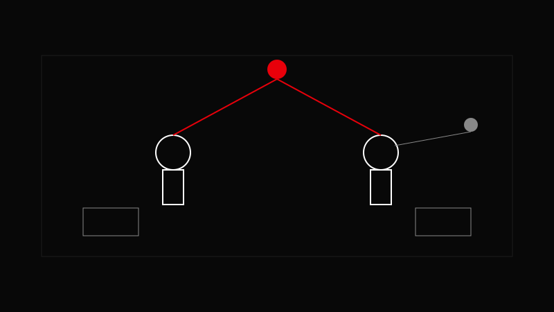

AVA CREATORS TOOLKIT · LIGHTING
INTERVIEW SETUP
Light the subject brighter than the background.
Light the subject brighter than the background.

Soft key at 45°, fill to taste, backlight for separation, practicals for depth.
Place soft key at 45°.
Add fill to taste.
Add backlight for separation.
Shape background with practicals.
Use negative fill on the far side for dimension.
Lighting the background brighter than the subject.